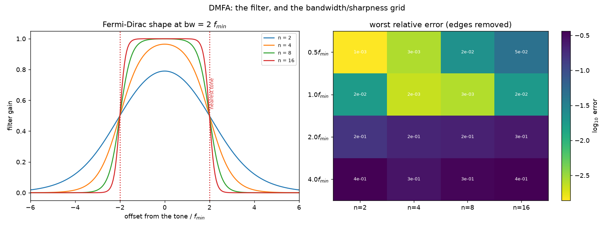
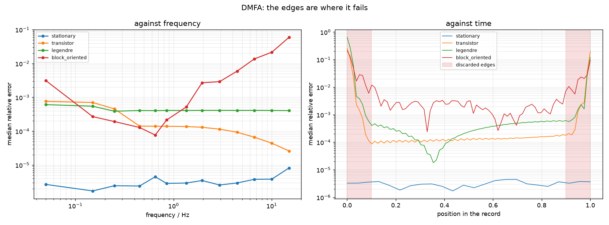

DMFA¶
Demodulated multi-frequency analysis. Transform the whole record once; around each excited tone, cut out a band with a passband filter; transform that band back. What comes out is that tone's complex amplitude as a function of time, and voltage over current is \(Z(f,t)\).
Nothing is windowed, so the time resolution is not tied to the multisine period — it is set by the filter bandwidth instead.
Provisional
This implementation reproduces the behaviour one expects of the method, but it has not been checked against the original description in the literature. Verifying it is an open item on the roadmap. Treat DMFA results as provisional and cross-check them against STFT.
The mathematics¶
Definition¶
For a stationary system the impedance is simply the ratio of the transforms,
which has no time dependence at all. Koster et al. (2017) rewrite this with an apparent time dependence by filtering and transforming back,
where \(\tilde g\) is a filter centred on \(\omega\) with bandwidth \(bw\). As \(bw \to 0\) the result is constant in time and equals the stationary impedance. Dynamic impedance is what you get by keeping the bandwidth finite:
This is the definition DEIStools implements. The bandwidth is the only thing that creates the time dependence: it decides how much of each tone's skirt is admitted, and the skirt is the time variation.
Relation to STFT¶
The short-time Fourier transform is
and the older definition of dynamic impedance is the ratio of two of these,
Equations (9) and (11) are the same thing whenever the filter \(\tilde g\) is the Fourier transform of the window \(w\). DMFA and STFT are therefore not rival methods but the same operation with the roles of windowing and filtering exchanged — and, as Battistel and La Mantia (2019) put it, differing only in the order the operations are performed:
| STFT / FFT-EIS | DMFA | |
|---|---|---|
| 1 | split the record into windows | transform the whole record |
| 2 | window each one | split the spectrum into bands |
| 3 | transform each one | filter each band |
| 4 | one spectrum per window | transform each band back |
Filters have more freedom of shape than window functions do, which is the practical argument for (9) over (11).
Quadrature filters¶
\(\tilde g\) is a quadrature filter: it is defined only for positive frequencies. Taking one side of the spectrum makes the inverse transform the analytic signal — a complex envelope — rather than a real band-limited signal, which is exactly what is wanted, since the envelope's magnitude and phase are the amplitude and phase of the tone.
The simplest is rectangular,
but a hard edge rings badly in time. DEIStools uses the smooth version of Battistel and La Mantia (2019), a product of two Fermi-Dirac functions normalised to unit gain at the centre:
which simplifies to the form the code evaluates,
a flat top with a logistic roll-off, equal to \(1/2\) at \(x = \pm 1\). So bw
is the half-amplitude half-width, and n sets how sharply the filter
falls — the parameter swept in example 12.
The bandwidth ceiling¶
bw cannot be chosen freely. It must be small enough that the band around
\(\omega_k\) is not reached by the neighbouring tone \(\omega_{k\pm1}\), nor by an
intermodulation \(\omega_i \pm \omega_j\). Koster et al. give the limit in
terms of the minimum spacing \(d\) designed into the multisine (in units of the
base frequency \(f_b\)):
A multisine designed with no minimum spacing, \(d = 0\), allows only \(bw \le \pi f_b\) — which is why the frequency grid and the achievable time resolution are the same decision. Their recommendation, from both simulation and experiment, is \(d = 7\).
The Gabor limit¶
Underneath all of this is the uncertainty relation between time and frequency resolution,
No method escapes it. STFT, DMFA, the lock-in and BLTVA simply offer different ways to spend the same budget.
Calling it¶
DMFA is assembled from four functions rather than called as one.
import numpy as np
from numpy.fft import fft, fftshift, fftfreq
from deistools.processing.dmfa_functions import (
extract_impedance, max_elaboration_points,
elaboration_frequency_axis, elaboration_time_axis)
from deistools.processing.passband_filters import create_fermi_dirac_fun
# 1. transform the whole record, zero frequency in the middle
ft_voltage = fftshift(fft(voltage)) / N
ft_current = fftshift(fft(current)) / N
spectrum_axis = fftshift(fftfreq(N, 1.0 / fs))
# 2. the bin of each excited tone
index_f0 = int(np.argmin(np.abs(spectrum_axis)))
indexes = (np.round(frequencies * T).astype(int) + index_f0).tolist()
# 3. the passband, on the band's LOCAL frequency axis
bandwidth = 0.5 * frequencies.min()
n_points = min(int(round(8 * bandwidth * T)),
max_elaboration_points(indexes, N))
band_axis = elaboration_frequency_axis(n_points, T)
band_filter = create_fermi_dirac_fun(band_axis, 0, bandwidth, 2)
# 4. extract and divide
Z = extract_impedance(ft_voltage, ft_current, indexes, band_filter, n_points)
t = elaboration_time_axis(n_points, T)Build the filter on the local axis
elaboration_frequency_axis(n_points, T) spans n_points bins of width
\(1/T\) — about 0.2 Hz in the example above. The full spectrum axis spans
\(f_s\), which is 1000 Hz. Build the filter on the wrong one and its
bandwidth is wrong by a factor of \(f_s T / n_{\text{points}}\) — 2500 here.
This is the easiest mistake to make with this method.
The two parameters¶
Bandwidth¶
Wider bands give finer time resolution and admit more of the neighbouring tone. The useful unit is \(f_{\min}\), because in DFT bins \(f_{\min}\) is exactly \(P\) bins, and the closest pair of tones on a quasi-log odd grid sits \(2f_{\min}\) apart.
So a passband of \(2f_{\min}\) is already reaching its neighbour.
| bandwidth | instants | median | worst (edges removed) |
|---|---|---|---|
| 0.5 \(f_{\min}\) | 80 | 1.35e-04 | 2.20e-02 |
| 1.0 \(f_{\min}\) | 160 | 1.01e-04 | 2.66e-03 |
| 2.0 \(f_{\min}\) | 320 | 9.31e-05 | 2.19e-01 |
| 4.0 \(f_{\min}\) | 640 | 1.04e-04 | 3.39e-01 |
(transistor system, sharpness \(n = 8\); example 12)
The median barely moves while the worst case moves by two orders of magnitude. Judge DMFA settings by the worst case, not the median — the leakage shows up as a large error at a few instants, not a small error everywhere. Selecting on the median here would pick \(2f_{\min}\), whose worst case is 158× poorer than the best setting.
Sharpness¶
n is the Fermi-Dirac exponent; large n approaches a brick wall. It has to
be matched to the bandwidth, because there are two opposite failure modes:
- Wide band, gentle filter — the passband reaches the neighbouring tone and leakage dominates.
- Narrow band, sharp filter — the band is truncated abruptly, so its inverse transform rings in time. At \(0.5f_{\min}\) the worst case grows from 1.4e-03 at \(n=2\) to 4.5e-02 at \(n=16\), with no neighbouring tone anywhere near the passband to blame.
An ideal passband is the \(n \to \infty\) corner, and that corner is a bad place
to be. This is why the filter is parameterised with an adjustable n.
A standard DSP window does better than the published filter
The Fermi-Dirac comes from statistical physics. Scored against known
ground truth on three systems it ranks last of seven candidates, with
Blackman about twice as good on the worst case. It remains the default
because it is what the papers specify; create_window_filter switches to
any of blackman, blackman-harris, nuttall, hann, kaiser or
gaussian in one line. The measurement is in
the implementation notes
and example 12 re-runs it.

Left: the Fermi-Dirac passband at four sharpnesses, with the nearest tone marked. Right: worst relative error over the grid — the best settings lie on a diagonal, not at a corner.
The record edges are unusable¶
The band-limited inverse transform rings at the record boundaries. Discard the first and last tenth of every DMFA result. This is not optional and no setting removes it:
| worst, edges removed | worst, edges kept | |
|---|---|---|
| transistor | 1.39e-03 | 4.13e-01 |
| legendre | 1.33e-03 | 8.85e-01 |
This is now fixable
The edge damage is circular wrap-around, and zero-padding the record before the transform removes 24-29x of it at no cost to the interior. See another way to apply the filter.
The stationary system shows no difference at all, which is the proof of what causes the rings: a constant impedance occupies a single bin, so truncating the band removes nothing and there is nothing to ring. The artefact is the cost of representing a changing quantity with a finite band, not an artefact of the record ending.

Right: error against position in the record. The three time-varying systems show the same U shape; the stationary one is flat to both ends.
Is the operation safe? The division, and the truncation¶
Two separate worries, with two different answers.
The division is safe, and it is not where the ringing comes from¶
The concern is natural: \(Z = \mathcal{F}^{-1}[\tilde V \tilde g] \big/ \mathcal{F}^{-1}[\tilde I \tilde g]\) divides one reconstructed signal by another, and if the denominator ever approaches zero the result explodes.
It does not, and the reason is structural. In a galvanostatic measurement the current is the excitation: exactly periodic, so its spectrum near \(f_k\) is a single line with no skirt. Filtering a single line gives a constant. The denominator is therefore constant by construction, not merely small-varying:
| measured | |
|---|---|
| variation of \(\|I_{\text{filtered}}\|\) over the record | 4.5e-03 |
| \(\min\|I_f\| / \mathrm{mean}\|I_f\|\) | 0.9936 |
| same, with 1e-4 A of current noise added | 0.9934 |
Replacing \(I_f(t)\) by the single constant \(I_f(T/2)\) changes the error nowhere by more than 1e-2 absolute — at the edges, where the error is 0.26 anyway. The ringing is entirely in the numerator: it is the band-limited reconstruction of the voltage envelope, and the division neither creates nor amplifies it.
This is why Chukwu et al. compute the admittance
Their measurements are potentiostatic, so for them the voltage is the clean excitation and the current carries the skirt. Taking \(Y = I/V\) rather than \(Z = V/I\) keeps the clean signal in the denominator. The rule is general: put the excitation in the denominator, then invert at the end if you want the other quantity.
Most of the spectrum is discarded, and that is the point¶
Also true that almost everything is zeroed: on the standard grid the extracted bands are 0.78% of the bins. But they hold about a third of the record's total energy — more than half of the positive-frequency half — because the bins that are kept are exactly where the signal is. The rest is the other tones, the harmonics, the trend near DC and the noise floor.
Zeroing them is selection, not loss. The excited line plus its skirt is the entire information about that tone's time-varying amplitude.
What is unsafe is the wrap-around¶
The genuine problem is neither of those. Multiplying a spectrum by a filter is a circular convolution in time. The kernel that reaches past the end of the record wraps around and picks up the beginning — and on a time-varying system the two ends are different. On the transistor record, \(|Z|\) at the lowest tone runs from 106 Ω at \(t=0\) to 43 Ω at \(t=T\), so the estimate near either boundary is contaminated by a value 2.4× away.
That, and not the division, is the edge oscillation.
Another way to apply the filter¶
Three alternatives were tried against known ground truth.
Zero-padding — works, and is the recommended fix¶
Padding the record before the transform makes the convolution linear: the kernel then runs into zeros instead of into the far end.
| system | worst, plain | worst, padded | median |
|---|---|---|---|
| transistor | 7.5e-01 | 3.2e-02 | unchanged (0.99×) |
| legendre | 8.8e-01 | 3.1e-02 | unchanged (0.99×) |
24× to 29× on the worst case, with the interior untouched — as it must be, since the kernel never reaches that far.
It works better than "assume the signal is zero outside" has any right to, and the reason is the structure above: the padding attenuates the numerator and the denominator by the same factor. At the first instant the filtered current falls to 0.49 of its mid-record value and the filtered voltage falls with it, so the ratio survives. Zero-padding costs signal-to-noise near the edges, not accuracy.
pad_record does it:
from deistools.processing.dmfa_functions import pad_record
ft_voltage = fftshift(fft(pad_record(voltage))) / n_paddedThe padding must be at least the kernel length, \(\approx 1/bw\); doubling the record is ample.
Time-domain filtering — better at the edges, worse in the middle¶
The lock-in demodulates first and filters in the time domain, where the boundary can be handled explicitly by reflecting the smooth baseband envelope. No circularity arises at all. Matched to the same 20 s resolution:
| position in record | DMFA (circular) | lock-in (time domain) |
|---|---|---|
| 0% | 2.6e-01 | 4.4e-03 |
| 25% | 9.8e-05 | 7.2e-04 |
| 50% | 1.2e-04 | 9.3e-04 |
| 100% | 3.9e-01 | 1.6e-02 |
| worst overall | 7.5e-01 | 6.0e-02 |
A clean trade: the lock-in is 25–60× better at the boundaries, DMFA about 7× better in the interior, because a boxcar integrator has poorer frequency selectivity than a smooth filter of the same bandwidth.
There is a reason you cannot simply reflect the record and get the lock-in's behaviour out of DMFA: reflecting a random-phase multisine destroys the carrier (see mirroring). A carrier-preserving reflection has to act on the baseband envelope, which means demodulating first — and once you have demodulated, you are running a lock-in. The two facts are the same fact.
Envelope detrending — tried, and it does not work¶
The idea: the envelope is non-periodic, so subtract the linear ramp that makes it periodic, filter, then add the ramp back. Measured, it is far worse — median 1.3e-04 → 1.2e-01, with 97% of the record above 1e-02 instead of 6%.
The reason is instructive. The ramp's own spectrum is not band-limited; it is a broad skirt. Subtracting it in the time domain removes all of it, but the band extraction only puts back the part inside the band, so adding the full analytic ramp back over-corrects. Adding back the filtered ramp instead makes the whole procedure an identity. The approach is circular, and no arrangement of it escapes that.
In short¶
Use zero-padding. It is one line, it costs nothing in the interior, and it removes the mechanism rather than compensating for it. Reach for the lock-in when the first or last few percent of the record is what you actually care about.
Trends: why BLTVA's detrending does not transfer¶
BLTVA handles a trend by differencing: the filter \(F_d(k) = (1-z_k^{-1})^d\) is applied to the data, the regressors are filtered with it too, the rows are reweighted by \(1/|F|\) to undo the colouring it imposes on the noise, and boundary regressors absorb the startup transient. Four coupled pieces.
None of them has a counterpart in DMFA, because DMFA has no model to filter and no weighting to restore. It does not estimate the trend; it rejects it. And since it forms a ratio of two filtered signals, any filter applied to both channels largely cancels:
| differencing order, applied to both channels | median error |
|---|---|
| 0 | 1.315e-04 |
| 1 | 1.308e-04 |
| 2 | 3.229e-04 |
| 3 | 5.263e-04 |
The median barely moves at \(d=1\) — the common factor divides out — and degrades beyond it. The reason it is not exactly a no-op is that \(F(k)\) varies across the band, so it reshapes the passband rather than scaling it. Near dc that variation is steep, which is why the lowest tone is the one it disturbs: differencing costs it 6.7e-03 even with no trend present.
What a trend actually does¶
Only one tone is at risk. With a 5 V peak-to-peak order-3 trend on a 1.53 V signal:
| lowest tone | median over all tones | |
|---|---|---|
| no trend | 2.1e-04 | 1.315e-04 |
| with trend | 2.9e-01 | 1.319e-04 |
A factor of 1400 on the lowest tone and nothing anywhere else. A trend lives at dc, so it reaches the band around \(f_k\) only through the filter's stopband, and every tone above the first is further away.
DMFA's actual knob: stopband rejection at dc¶
For the tone at \(f_k\) the trend sits \(f_k\) from the band centre, so what matters is the filter's gain there. Varying nothing else:
| filter | rejection at \(f_{\min}\) | error, lowest tone |
|---|---|---|
| Fermi-Dirac n = 2 | 18 dB | 2.9e-01 |
| Fermi-Dirac n = 4 | 35 dB | 3.6e-02 |
| Fermi-Dirac n = 8 | 69 dB | 1.4e-03 |
| Fermi-Dirac n = 16 | 139 dB | 2.1e-02 |
| blackman | 29 dB | 6.8e-02 |
| nuttall | 27 dB | 8.8e-02 |
A 211× improvement from changing one parameter. rejection_db reports
the number.
Two things in that table are worth dwelling on.
Rejection buys accuracy only until the filter's own ringing takes over:
n = 16 has 70 dB more than n = 8 and is 15× worse, because at that
sharpness it rings. There is an optimum, and it is not at the extreme.
And a trend reverses the filter ranking. The compactly supported windows won the trend-free comparison, but they reach only about 30 dB at \(f_{\min}\), where the Fermi-Dirac's exponential tail reaches 69. Blackman is the better filter on a clean record and 48× worse on this one. Choose against the trend you expect, not against a clean simulation.
The full ladder¶
| approach | lowest tone | vs doing nothing |
|---|---|---|
| nothing (n = 2) | 2.9e-01 | — |
| differencing, d = 1 | 1.0e-02 | 28× |
| subtract an order-3 polynomial first | 4.7e-03 | 61× |
| filter n = 8 | 1.4e-03 | 211× |
| n = 8 + subtract the polynomial | 1.6e-04 | 1800× |
| no trend at all, n = 8 | 1.5e-04 | (the floor) |
The combination reaches the trend-free floor exactly. Note the ordering: differencing is the weakest of the three, which is the opposite of its standing in BLTVA — there it reduces the number of trend parameters, and here there are none to reduce.
When the dc skirt reaches several tones¶
The single-tone case above is the easy one. In a real measurement the trend is large and the record is short, and then the skirt swallows the bottom of the grid. With a 48 V peak-to-peak drift on a 1.53 V signal over 8 periods:
| tone | f / Hz | trend/signal at that bin | error, no trend | error, with trend |
|---|---|---|---|---|
| 0 | 0.05 | 2.6 | 4.3e-03 | 8.3e-01 (193×) |
| 1 | 0.15 | 0.86 | 5.5e-03 | 1.8e-01 (33×) |
| 2 | 0.25 | 0.51 | 5.7e-03 | 1.1e-01 (19×) |
| 3 | 0.45 | 0.29 | 4.9e-03 | 5.2e-02 (11×) |
| 4 | 0.65 | 0.21 | 4.5e-03 | 4.4e-02 (10×) |
| 5 | 0.85 | 0.16 | 4.7e-03 | 3.0e-02 (6×) |
Six tones compromised, not one. Raising the filter's stopband rejection no longer saves you, because the trend is not leaking in through the skirt of the filter — it is sitting in the same bins as the signal.
Why no filter can fix this¶
A filter is diagonal in frequency: it multiplies bin \(k\) by \(g_k\). The trend's contribution \(T(k)\) and the signal's \(S(k)\) are both in bin \(k\), so any filter scales them together and the ratio \(T(k)/S(k)\) is untouched. That is a property of the operation, not of the particular filter, and it is why differencing measured as the weakest option: differencing is also diagonal.
Subtracting a polynomial in the time domain is not diagonal and does help — but it removes signal along with the trend, and DMFA has no way to know how much. Measured by applying the same subtraction to a record with no trend, so that everything removed is signal:
| trend-model order | distortion at tone 0 | at tone 1 | at tone 2 |
|---|---|---|---|
| 1 | 2.1e-03 | 4.5e-04 | 2.4e-04 |
| 3 | 5.9e-03 | 1.4e-03 | 7.3e-04 |
| 8 | 3.7e-02 | 3.3e-03 | 1.5e-03 |
| 12 | 6.3e-02 | 6.1e-03 | 2.2e-03 |
Against a clean error of 4.3e-03 at tone 0, an order-3 subtraction already costs more than the measurement is worth, and an awkward trend needing order 8 or 12 costs an order of magnitude more. This is the real limitation: the detrending distorts, the distortion grows with the trend order, and the filter formulation offers nothing to correct it with.
The fix: estimate the trend and the envelope together¶
DMFA is least squares in a Fourier basis. Once that is seen, the fix is the obvious one and the same one BLTVA uses: put the trend in the design matrix and solve for it alongside the envelope coefficients.
The trend columns and the band columns are not orthogonal — that non-orthogonality is the overlap problem — and a joint solve handles it exactly, paying the usual price of collinearity in variance rather than in bias. The filter is not lost: it reappears as a ridge penalty \(\lambda_m = 1/g_m - 1\) on the band columns and none on the trend columns.
Measured on the same six-tone case:
| tone | no trend | trend, plain DMFA | trend, subtract first | trend, joint ridge |
|---|---|---|---|---|
| 0 | 4.27e-03 | 8.26e-01 | 8.04e-03 | 4.73e-03 |
| 1 | 5.50e-03 | 1.81e-01 | 6.28e-03 | 5.46e-03 |
| 2 | 5.72e-03 | 1.06e-01 | 5.61e-03 | 5.63e-03 |
| 3 | 4.86e-03 | 5.20e-02 | 4.91e-03 | 4.88e-03 |
| 4 | 4.45e-03 | 4.42e-02 | 4.47e-03 | 4.46e-03 |
| 5 | 4.72e-03 | 2.96e-02 | 4.67e-03 | 4.68e-03 |
The joint fit returns every tone to its trend-free value. Subtraction leaves a residual distortion at the lowest tone — 8.0e-03 against a floor of 4.3e-03 — and the joint fit does not.
Where this leaves the two methods
The fix for DMFA's trend problem is to use its least-squares form with trend regressors — at which point it differs from BLTVA only in the basis chosen for the envelope, Fourier against Legendre. That is not a coincidence or a defeat; it is the same observation from the other side. A filter can reject a disturbance that lives somewhere else in frequency. Separating two things that occupy the same bins needs a model, and adding one is what turns a filter bank into an estimator.
Not implemented. A dense solve does not scale -- 13 tones on a 400 s record is a 400000 x 2110 design matrix -- but the structure is friendly: the tone blocks are mutually orthogonal and couple only to the trend block, so the normal equations are block-arrow and can be formed by FFT. It is on the roadmap.
Until then, on a record whose trend reaches the bottom of the grid, use
BLTVA for the lowest few tones. It already solves this problem, and
Nq is the parameter that does it.
In practice¶
- Pick the filter for the rejection you need.
rejection_db(g, axis, f_min)tells you what you have. On this record 69 dB was enough and 18 dB was not. - Subtract a smooth trend before the transform if one is visible. This is safe in a way it is not for BLTVA: a smooth polynomial has energy only near dc, so removing it does not touch the bands. Match the order to the trend — order 3 scored 4.7e-03 here, and going to 5 or 8 was slightly worse, since the extra freedom starts removing signal.
- Or raise the lowest excited frequency, which moves the first band further from dc and costs nothing but time resolution.
- Check whether the skirt has reached the bottom of your grid at all. Compare the trend's magnitude at each excited bin with the signal's. If the ratio exceeds a few tenths at more than the lowest tone, none of the above is enough and the section above applies: use BLTVA for those tones, or wait for the joint solve.
What you should not do is reach for differencing because BLTVA uses it. The two methods are solving different problems with the same word.
Inspecting a fit¶
from deistools.processing.dmfa_functions import visualize_dmfa_filtering
visualize_dmfa_filtering(band_filter, ft_voltage, ft_current,
spectrum_axis, list(frequencies), indexes)A slider pages through the excited tones, showing the raw band, the filtered band and the filter itself, for voltage and for current. It is the first thing to open when a DMFA result looks wrong: a band that is visibly clipped, or one with a neighbouring tone inside the passband, explains more than any residual number.
When to use it¶
- You want time resolution decoupled from the multisine period. DMFA's is set by the bandwidth, so it is adjustable — but see the caveat below: at the bandwidth that measures best here, the independent spacing works out the same as STFT's one-period window. Finer costs accuracy.
- You want a method that, like STFT, assumes nothing about the form of the variation.
- As a cross-check on BLTVA, whose accuracy depends on an assumption DMFA does not make.
Given the provisional status above, do not use DMFA alone for a result you intend to publish.